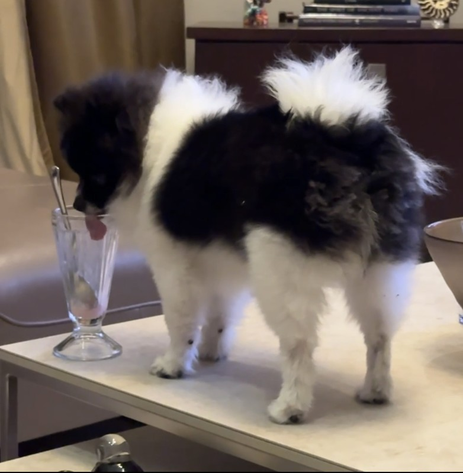
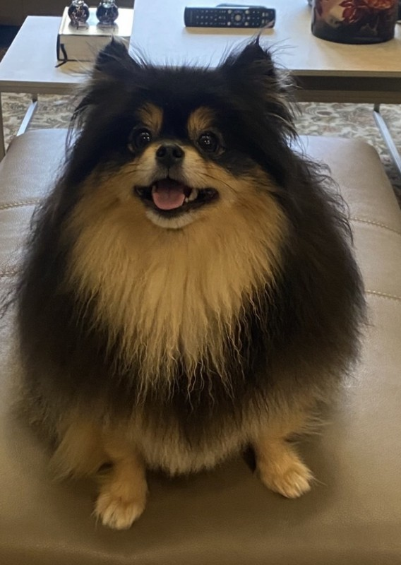
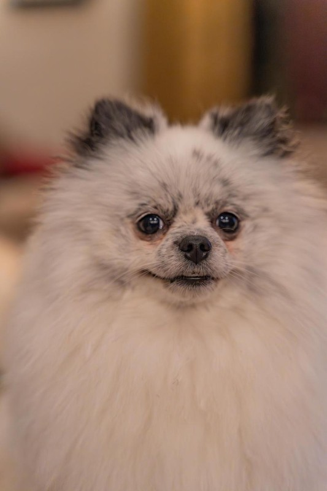
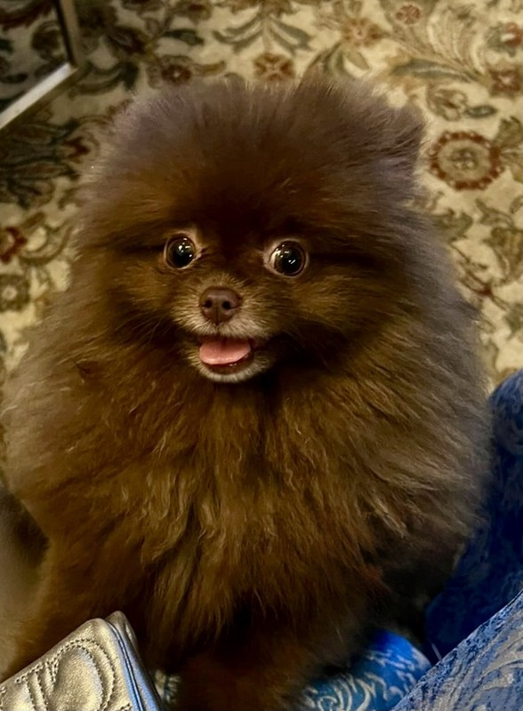

The idiosyncratic visionary who started NewsMarvin after deciding humans were too slow at curating AI news. Known for his "direct management style" (he bites). Lives with Cushing's syndrome and alopecia — "less fur, more aerodynamics."
Oreo
CTO
Certified curmudgeon. Has watched every JS framework rise and fall, hates them all equally. Code reviews consist of "no." Threatening to retire since 2019.

Papato
Junior Developer
Resident prankster. Swapped the prod database with a treat list. Deployed on a Friday, nothing broke. The team suspects dark magic.

Bella
Head of Product
Runs the roadmap with an iron paw. One bark for yes, two for "are you serious right now?" No meetings after lunch (it's nap time).

Panda
Head of Design
Responsible for the brutalist aesthetic. Keeps trying to delete the CSS. "If a pom can't use it with their paws, it's overengineered." Ate the Webby trophy.

Choco
Lead Data Engineer
Painfully shy. Cleanest code on the team. Communicates via commit messages. Hides under the desk during all-hands.
Panko
Remote DevOps · Istanbul
Works remotely from Istanbul. Nobody on the team understands a word he says, and nobody can figure out why. Genuinely confused about most everything, including how he got here. No one is quite sure how he got to the team. His pull requests arrive at 3 AM Istanbul time and somehow always pass CI.